Full-Arch Implant
잃어버린 치아 건강
전악(전체) 임플란트
치아 대부분을 상실하셨거나 틀니의 불편함으로 고생 중이신가요? 전악 임플란트는 교합·얼굴 조화·잇몸뼈 상태를 모두 고려하는 고난도 수술입니다. 연세타이밍치과는 숙련된 기술력으로 무치악 환자분들께 제2의 치아를 선사하며, 입술 모양·얼굴 균형까지 고려해 자연스러운 미소를 디자인합니다.
자동차 네비게이션처럼 컴퓨터 시뮬레이션으로 수술 경로를 미리 결정하는 방식입니다. 잇몸을 크게 절개하지 않고 필요 부분만 미세하게 구멍을 내어 수술하므로 통증과 부기가 적고, 고혈압·당뇨가 있는 분이나 고령 환자도 안심하고 치료받으실 수 있습니다.
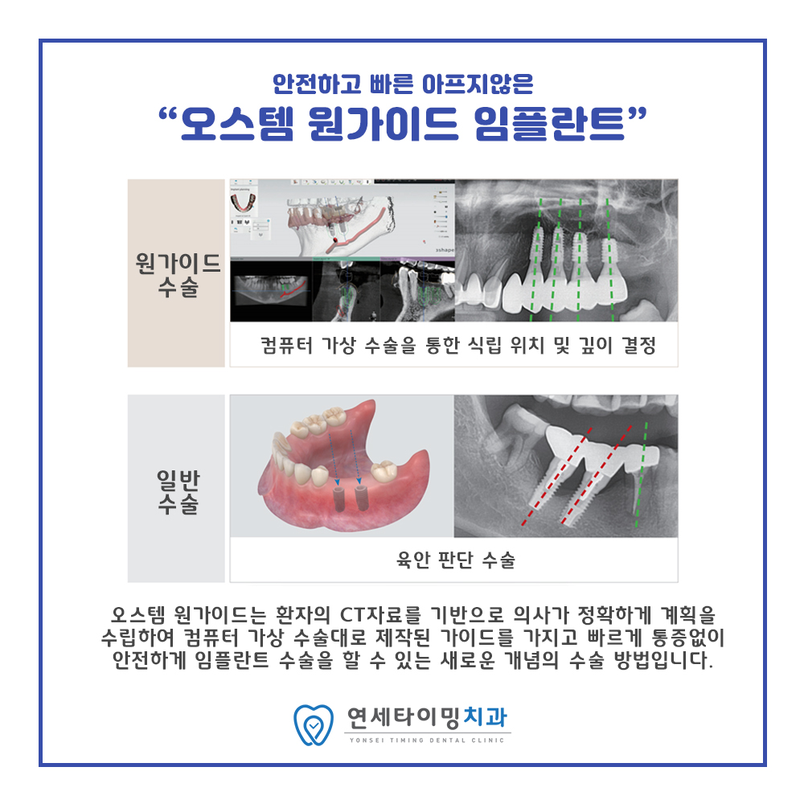
바쁜 일상으로 임플란트를 망설이셨나요? 본원은 첨단 디지털 장비를 활용하여 내원 당일 발치와 동시에 임플란트를 식립하는 원데이 시스템을 운영합니다. 치료 기간은 줄이고 일상 복귀는 앞당겨 드립니다.

치아 대부분을 상실하셨거나 틀니의 불편함으로 고생 중이신가요? 전악 임플란트는 교합·얼굴 조화·잇몸뼈 상태를 모두 고려하는 고난도 수술입니다. 연세타이밍치과는 숙련된 기술력으로 무치악 환자분들께 제2의 치아를 선사하며, 입술 모양·얼굴 균형까지 고려해 자연스러운 미소를 디자인합니다.
윗어금니 임플란트는 잇몸뼈가 얇거나 상악동(공기 주머니)이 내려와 공간이 부족한 경우가 많습니다. 본원은 고난도 상악동 거상술로 부족한 뼈를 채우고 안전하게 임플란트를 식립합니다. 환자분의 잇몸뼈 잔존량에 따라 2가지 접근법을 선택합니다.
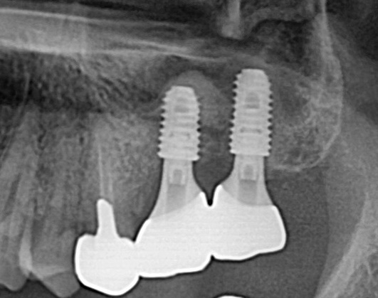
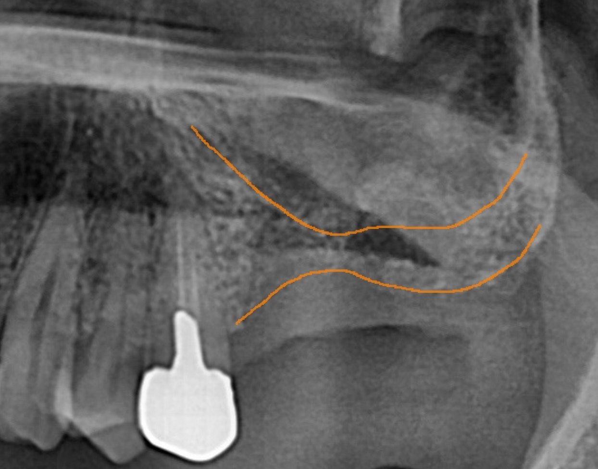
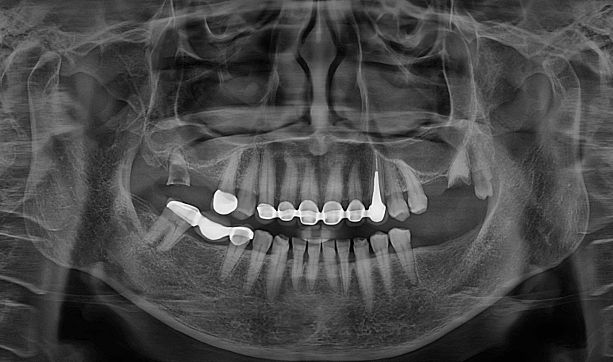
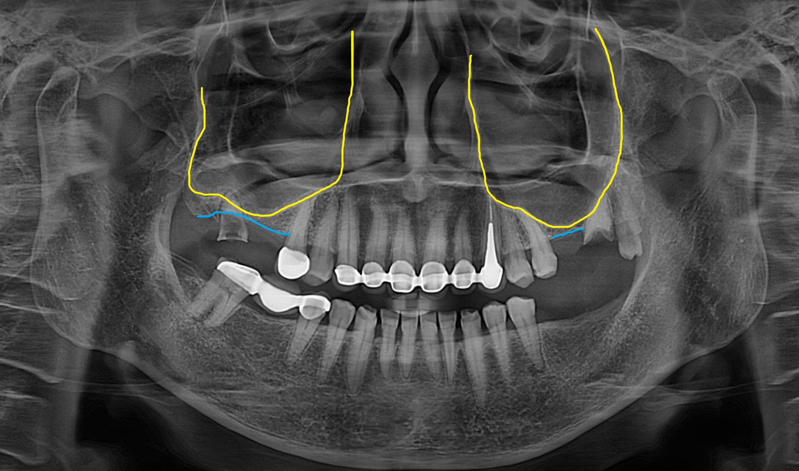
치아를 뽑은 후 방치하면 잇몸뼈 높이와 너비가 급격히 줄어듭니다. 발치와 보존술은 치아를 뽑은 빈 공간에 미리 골이식재를 채워 잇몸뼈가 주저앉는 것을 막고, 추후 임플란트가 단단히 고정될 최적의 환경을 만드는 시술입니다.
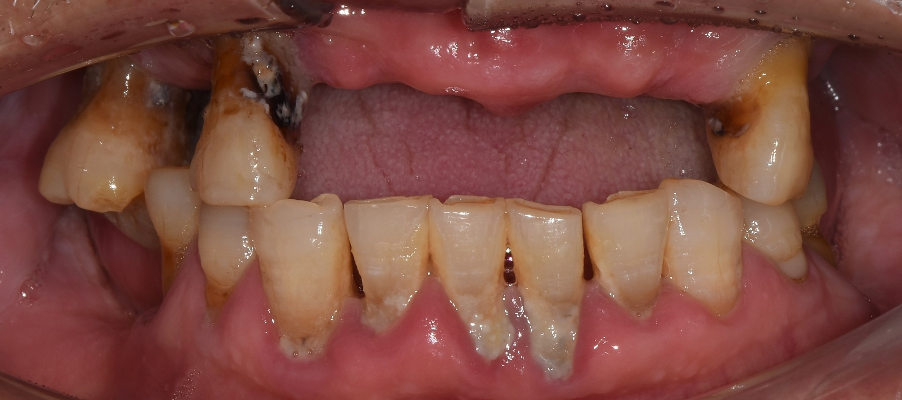
잇몸뼈가 부족해 많은 임플란트가 어렵거나 전체 임플란트 비용이 부담스러우신가요? 임플란트 틀니는 2~4개의 최소 임플란트를 전략적으로 식립 후 틀니를 '딸깍' 결합하여 고정하는 방식입니다. 틀니의 흔들림은 잡고 수술 부담은 낮췄습니다.
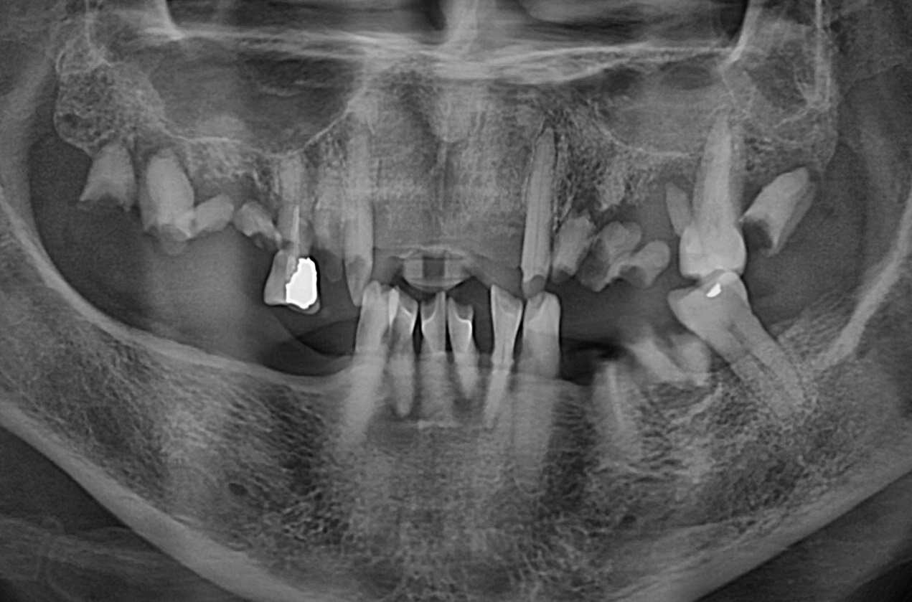
임플란트 재수술은 처음 심는 것보다 훨씬 까다롭고 정교한 기술이 필요합니다. 연세타이밍치과는 실패의 원인을 철저히 분석하여 다시는 같은 불편을 겪지 않으시도록 고난도 재건술을 시행합니다. 관리 소홀로 인한 주위염, 식립 위치 오류, 흔들림·탈락, 결합 불량 등을 해결합니다.
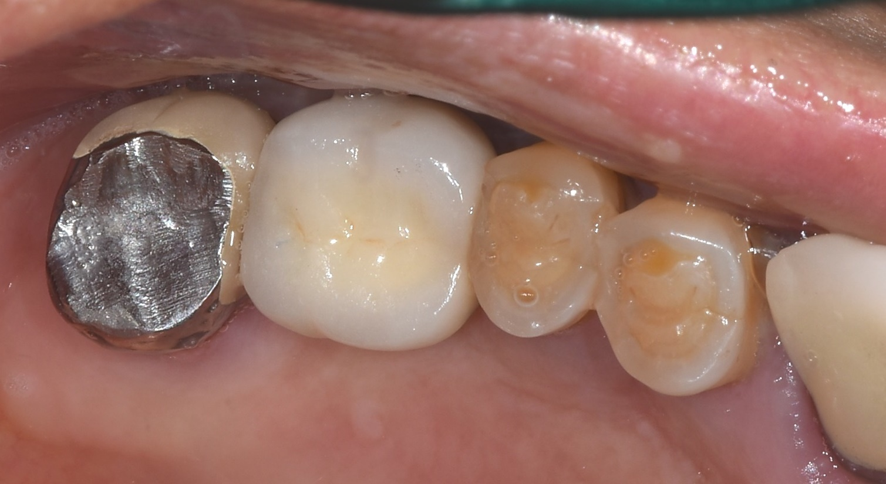
임플란트는 영구적이지 않습니다. 픽스쳐(뿌리)·지대주(기둥)·보철물(머리) 3층 구조로, 각 구조물이 파절되거나 연결 나사가 풀릴 수 있습니다. 픽스쳐 자체에 문제가 없다면 나사를 조여주거나 새 보철물을 만들어 해결 가능합니다. 무조건 재수술보다 살릴 수 있는 방법을 먼저 고민합니다.
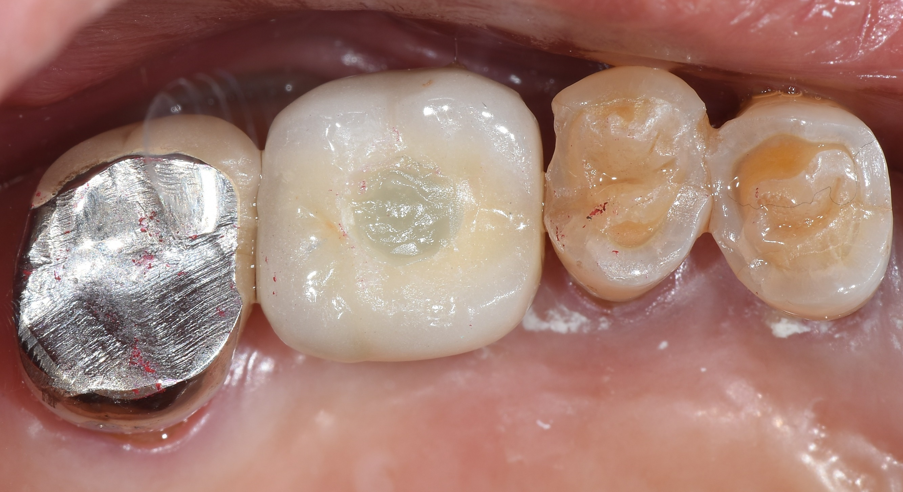
잇몸뼈가 거의 없거나 골다공증 약 장기 복용 등으로 임플란트가 어려우신 분들께 편안하고 잘 씹히는 맞춤형 틀니를 제작합니다. 수술 부담은 덜고 씹는 즐거움은 그대로 되찾아 드립니다. 여러 번의 인상 채득과 교합 측정으로 0.1mm 오차까지 세심하게 조정합니다.
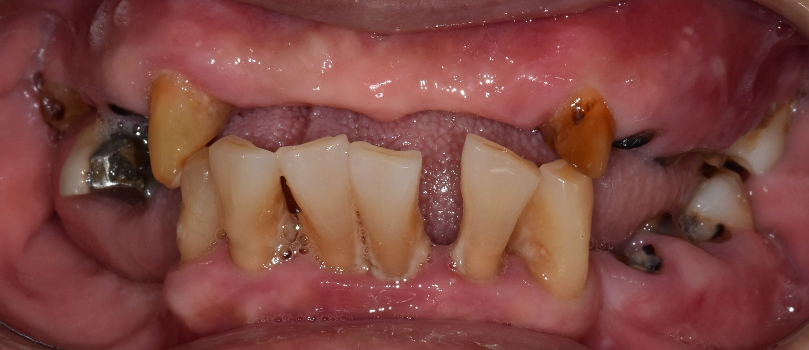
임플란트는 신경이 없어 문제가 생겨도 통증을 느끼기 어렵습니다. 오랫동안 튼튼하게 유지하려면 체계적 사후 관리와 정기 검진이 필수입니다. 특히 당뇨·골다공증 등 전신질환자는 더욱 세심한 관리가 필요하며, 본원은 전신질환과 구강 건강의 상관관계를 깊이 이해하여 엄격한 관리 기준을 적용합니다.
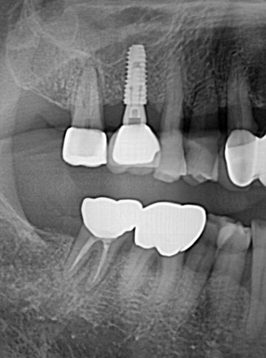